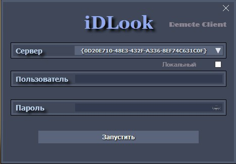

Программа iDLook Client
Программа iDLook Client
Используя программу установки, на удаленном компьютере устанавливается программное обеспечение для клиента, так как было описано в разделе «Установка и запуск ПО». iDLook Client – это специализированная программа для удаленного доступа клиентов к ресурсам системы iDLook. Для обеспечения удаленного доступа, после создания клиента в базе данных системы, по адресу электронной почты (Email), к нему поступает письмо с GUID файлом доступа.
GUID файл доступа должен располагаться, в корне папки iDLClient.

После запуска программы iDLClient и выборе GUID, необходимо определиться с типом доступа клиента - обычно это внешний доступ, использующий сеть Интернет (флажок «Локальный» не установлен), но в некоторых случаях используется локальный доступ, позволяющий производить удаленный доступ к ресурсам без использования Интернет (флажок «Локальный» - установлен).
После ввода имени пользователя (клиента) и пароля, необходимо запустить программу, нажатием кнопки «Запустить», после чего программа произведет подключение к системе iDLook, а затем появится рабочий экран программы и иконка в области уведомлений, для вызова главного меню программы. Количество камер на экране, будет соответствовать установленным настройкам клиента.
Все окна отображений камер можно перетаскивать методом Drag&Drop, с помощью мыши. Изменения положения окон камер экране, запоминаются системой и будут использоваться при последующих запусках.
При нажатии на иконку программы, откроется главное меню.